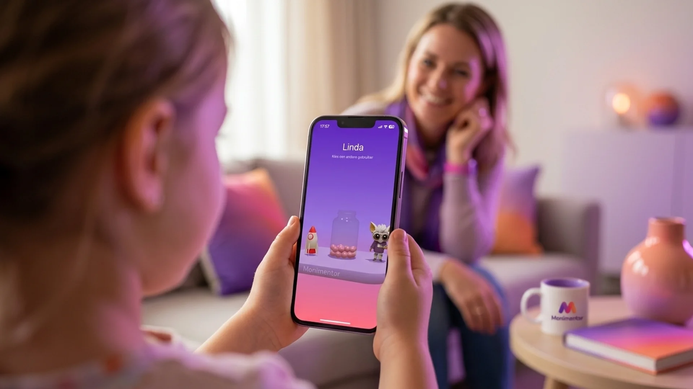
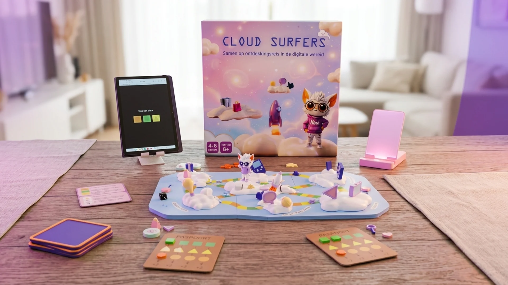
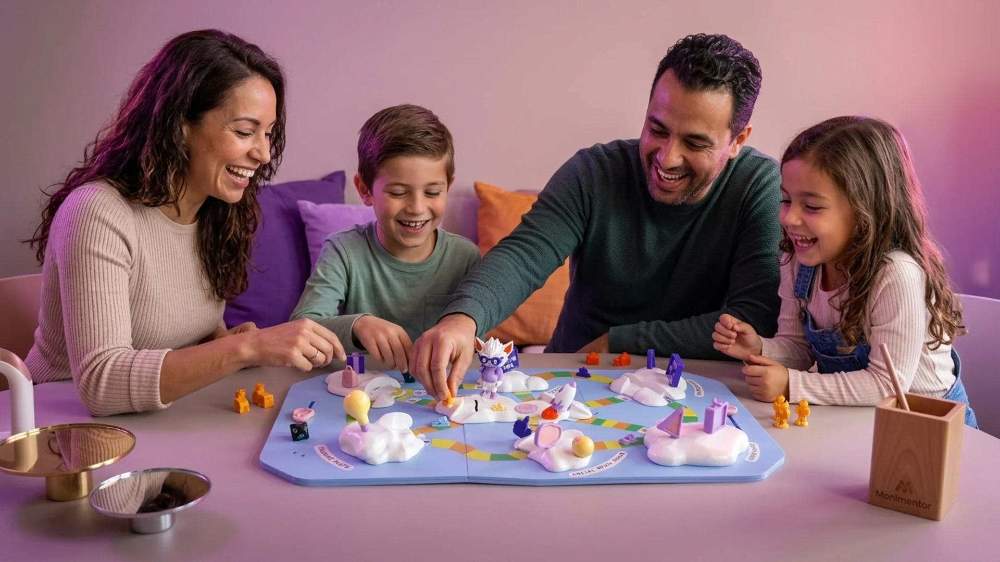

The Solution: From Screen to Shared Laughter
With Monimentor, we help children learn to manage their screen time themselves — and bring that digital world back to the kitchen table with the Cloud Surfers board game.

The Digital Guide
Monimentor: Self-Regulation, Without Conflict
The Monimentor app turns screen time into visual energy marbles. When the jar is full, your child learns to stop on their own — with Moni as their cheerful guide.
1. Digital Energy
Every minute of screen time is converted into energy marbles. This gives children visual insight into their digital rhythm, instead of an abstract countdown clock.
2. Learning Through Play
Is the jar full? Then the screen doesn't go black. Your child feels their own limit. This is how they learn self-regulation — not through punishment, but through experience.
3. Your Digital Guide
Moni mirrors emotions. When your child plays too long, Moni gets tired. Moni is the cheerful interpreter between your child's world and yours as a proud parent.
From screen to shared laughter at the kitchen table
The screenshots your child collects in the Monimentor app become the real content of the Cloud Surfers board game. Finally, a game that grows with your family — and never gets old.
The Physical Game (Prototype)
Cloud Surfers (Prototype): From Digital Moments to Physical Play
No strict rules, but playing and discovering together. With the collected screenshots, you unravel each other's digital experience world.
100% Real Content from Your Family
No fictional cards or made-up questions, but the real experience world of your child and yourself. The game is all about the images you've collected together.
Grows with Your Child
What an 8-year-old finds fun is completely different at age 11. Because the collected screenshots change weekly, the game changes automatically with it. This way you never get tired of it and it stays interesting year after year!

How the Game Works
Step by Step to Family Fun
Collecting Screenshots
During the week, family members receive playful prompts through the Monimentor app. Think of: "Take a screenshot of something that made you laugh hard" or "Your favorite app of the week".
Playing at the Table
At the kitchen table, the screenshots become part of the game. With spinning wheels, passports, stamps, and surprising game cards, you unravel each other's screenshots.
Funny Conversations
No cold interrogation or control, but hilarious tasks and funny questions. You discover your child's latest memes, and your child learns what dad or mom actually does on that phone all day!
The Fridge Memory
At the end, parent and child fill in a reflection postcard together. You hang it on the fridge: a cheerful souvenir and a nice memory of the agreements made.

What Families Say
Big words for little screens
Zodra de kinderen willen kijken, moeten ze de app echt aanzetten. Dat vind ik een groot voordeel: ze kunnen pas aan de slag als het systeem actief is.
— moeder
The Origin
Science & Craftsmanship
Monimentor x TU Delft
To bridge the gap between the digital app and the physical world, Monimentor brought in graduation student Klaske (TU Delft). She conducted extensive research into how we could connect these worlds, and that's how the Cloud Surfers board game was born.
Built In-House
The physical production and first prototypes were built locally in the creative workshop of founder Maarten Nijhuis.
On the Path to Series Production!
We're fully committed to further developing the Cloud Surfers game! After the successful first tests with the prototype, we're moving towards series production. We're looking for investors, funds, and municipalities who want to support and help fund us. Send an email to hi@monimentor.com — together we'll get this unique game onto many kitchen tables and inspire families everywhere!